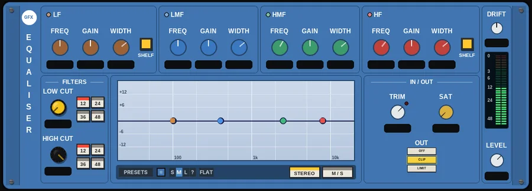
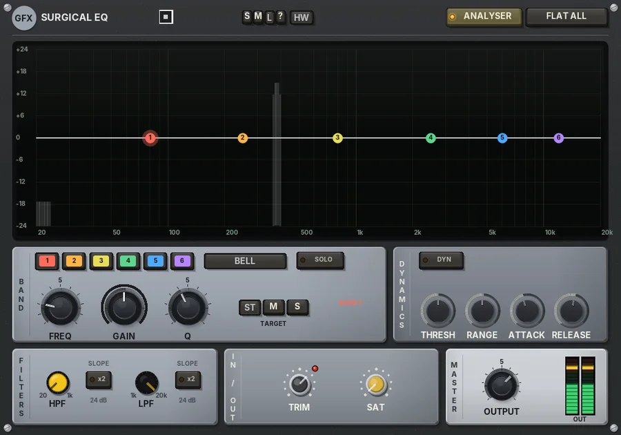
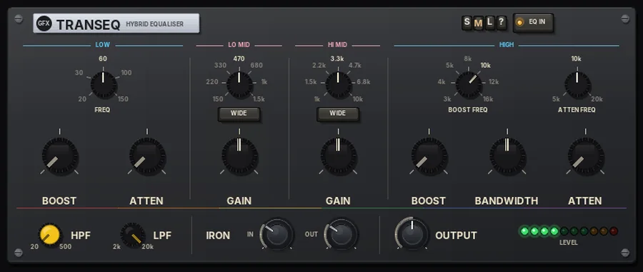
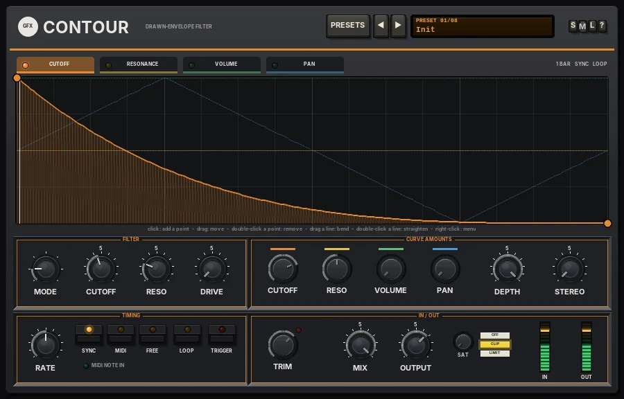
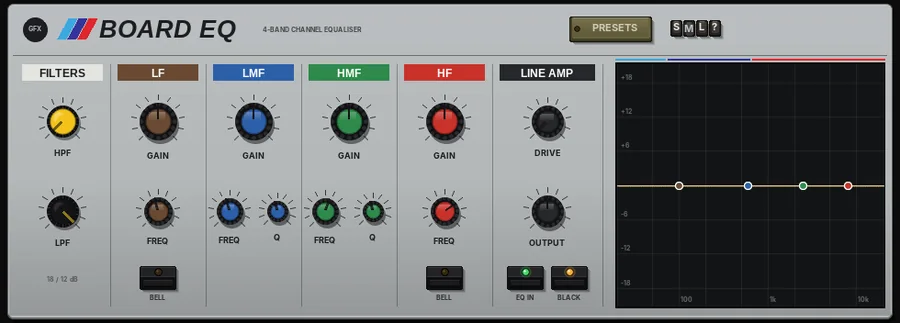
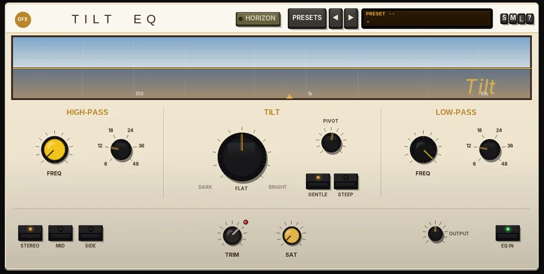

EQ & filters at a glance
Parametric, console, graphic, program, tilt and tone-control EQs, plus a drawn-envelope filter and an automatic envelope / step filter. Click a plug-in for its panel; each one has its manual PDF and a download.
| Plug-in | In the spirit of | Main features | Best for |
|---|---|---|---|
 EqualiserPanel | Four-band broadcast parametric |
| Flexible tone shaping |
 Surgical EQPanel | Modern precision digital EQ |
| Precise fixes and resonance control |
 TransEQPanel | Passive program equalisers |
| Broad, musical tone moves |
 BaxendalePanel BaxendalePanel | Hi-fi two-knob tone controls |
| Quick tilts on single tracks |
 ContourPanel | Drawn-envelope filters |
| Rhythmic filtering and gating |
 Board EQPanel | Classic British console channel EQs |
| Channel EQ with a console attitude |
 Graphic EQPanel Graphic EQPanel | Studio and live-sound rack graphics |
| Broad tone shaping, notching, room work |
 Tilt EQPanel | Hi-fi and mastering tilt controls |
| Quick, natural tonal balance |
 StarfishPanel StarfishPanel | 70s envelope-filter pedals and modern sample-and-hold filters |
| Funk quack, stepped filter grooves |
 EchofishPanel EchofishPanel | Envelope filters into tape and analogue echoes |
| Dub, funk and moving textures |
 SkyePanel SkyePanel | The classic 622 broadcast parametric rack EQ |
| Broad, musical tone shaping and notches |